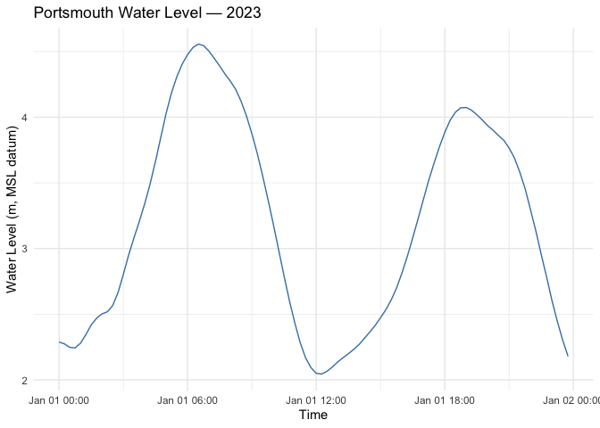
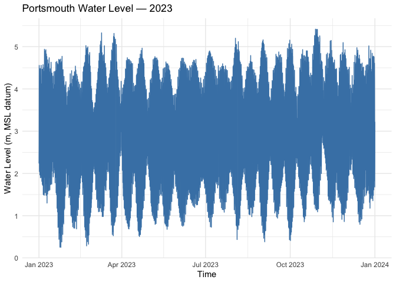

Harmonic Analysis of Tides
library(magrittr)
library(lubridate)Attaching package: 'lubridate'
The following objects are masked from 'package:base':
date, intersect, setdiff, unionlibrary(ggplot2)Data
Data
NOAA Tides & Currents
| Field | Value |
|---|---|
| Station name | Southbank Riverwalk, St Johns River (8720226) |
| Location | Jacksonville, FL, USA |
| Latitude | 30° 19.2’ N |
| Longitude | 81° 39.5’ W |
| Datum reference | MLLW = MSL - 1.06 m |
| Time reference | EST |
| Resolution | 6-minutes |
| Units | “Standard” (f) or Metric (m) |
| Predicted tide | Harmonic |
| Verified (observed) tide | preliminary: not quality controlled available up to todays date; verified: quality controlled – month to year behind) |
A tidal datum can be thought of as an imaginary fixed plane, or benchmark, relative to which we measure depths. Different regions and datasets use different datums.
The NOAA station uses Mean Lower-Low Water (MLLW) as its zero: - Mean Lower Low Water (MLLW) = “The average of the lower low water height of each tidal day observed over the National Tidal Datum Epoch” - Mean Sea Level (MSL) = “The arithmetic mean of hourly heights observed over the National Tidal Datum Epoch.” - MLLW = MSL - 1.06 m @ Southbank Riverwalk - National Tidal Datum Epoch = “The specific 19-year period adopted by the National Ocean Service as the official time segment over which tide observations are taken and reduced to obtain mean values (e.g., mean lower low water, etc.) for tidal datums. It is necessary for standardization because of periodic and apparent secular trends in sea level. The present NTDE is 1983 through 2001 and is actively considered for revision every 20-25 years.”
British Oceanographic Data Centre - UK Tide Gauge Network
| Field | Value |
|---|---|
| Station name | Portsmouth |
| Location | UK |
| Latitude | 50° 48’ N |
| Longitude | 01° 06’ W |
| Datum reference | ACD = ODN − 2.73 m |
| Time reference | GMT |
| Resolution | 15-minutes |
| Units | Metric (m) |
| ASLVBG02 | Observed surface elevation from bubbler gauge relative to ACD |
| Residual | The measured height minus the predicted height. The predicted values are derived from a database of tidal constants maintained by the National Oceanography Centre Application Group. All values are relative to Admiralty Chart Datum (ACD) |
| Surges | Extreme surges are the maximum and minimum tidal residuals |
- The UK national levelling network expresses heights in terms of ODN = average level of the sea at Newlyn (southwest England) 1915–21.
- Most published tide tables in Great Britain use the Admiralty Chart Datum (ACD), which is the lowest level due to astronomical effects and excluding meteorological effects below the UK national height reference ODN.
- In Portsmouth, this is 2.73m below the ODN.
Load data
The raw data files for Portsmouth and Jacksonville are stored in data/.
library(httr)
base <- "https://api.tidesandcurrents.noaa.gov/api/prod/datagetter"
params <- list(
begin_date = "20230101",
end_date = "20231231",
station = "8720226",
product = "hourly_height", # use 'water_level' for 6-min; then do month by month
datum = "MLLW",
time_zone = "gmt",
units = "metric",
format = "csv",
application= "RTides"
)
resp <- GET(base, query = params)
# JSON -> R list
data <- content(resp, "text", encoding = "UTF-8")
data <- read.csv(text = data, stringsAsFactors = FALSE)
# Print first and last 5 rows in one table
library(knitr)
n <- 5
nrows <- nrow(data)
if (nrows <= 2 * n) {
show_data <- data
} else {
show_data <- rbind(
head(data, n),
setNames(rep(list(rep("...")), ncol(data)), names(data)),
tail(data, n)
)
}
kable(show_data)| Date.Time | Water.Level | Sigma | I | L | |
|---|---|---|---|---|---|
| 1 | 2023-01-01 00:00 | 0.569 | 0.004 | 0 | 0 |
| 2 | 2023-01-01 01:00 | 0.411 | 0.005 | 0 | 0 |
| 3 | 2023-01-01 02:00 | 0.244 | 0.004 | 0 | 0 |
| 4 | 2023-01-01 03:00 | 0.118 | 0.003 | 0 | 0 |
| 5 | 2023-01-01 04:00 | 0.059 | 0.002 | 0 | 0 |
| 6 | … | … | … | … | … |
| 8756 | 2023-12-31 19:00 | 0.589 | 0.004 | 0 | 0 |
| 8757 | 2023-12-31 20:00 | 0.505 | 0.005 | 0 | 0 |
| 8758 | 2023-12-31 21:00 | 0.355 | 0.005 | 0 | 0 |
| 8759 | 2023-12-31 22:00 | 0.197 | 0.007 | 0 | 0 |
| 8760 | 2023-12-31 23:00 | 0.091 | 0.004 | 0 | 0 |
fl_time <- as.POSIXct(data$Date.Time, tz = "UTC")
fl <- data.frame(time = fl_time, elevation = as.numeric(data$Water.Level))
# Plot a week of tide curves (first 7 days) on the same chart, color by day
library(dplyr)Attaching package: 'dplyr'
The following objects are masked from 'package:stats':
filter, lag
The following objects are masked from 'package:base':
intersect, setdiff, setequal, unionlibrary(lubridate)
library(ggplot2)
fl_week <- fl %>%
filter(time >= as.POSIXct("2023-01-01 00:00:00", tz = "UTC") &
time < as.POSIXct("2023-01-8 00:00:00", tz = "UTC")) %>%
mutate(day = as.Date(time))
ggplot(fl_week, aes(x = format(time, "%H:%M"), y = elevation, color = factor(day), group = day)) +
geom_line() +
labs(
title = "Jacksonville Water Level — First Week of 2023",
x = "Hour of Day",
y = "Water Level (m, MLLW datum)",
color = "Date"
) +
theme_minimal() +
theme(
legend.position = c(0.9, 0.8), # overlay legend inside plot area (x, y in npc)
legend.background = element_rect(fill = "white", color = "gray", linewidth = 0.5)
)
ggplot(fl, aes(x = time, y = elevation)) +
geom_line(color = "steelblue") +
labs(
title = "Jacksonville Water Level — 2023",
x = "Time",
y = "Water Level (m, MLLW datum)"
) +
theme_minimal()
# Read CSV (expected columns: date, time, elevation)
portsmouth_raw <- read.csv("data/Portsmouth.csv", stringsAsFactors = FALSE)
portsmouth_raw <- portsmouth_raw[portsmouth_raw$date >= "2023-01-01" & portsmouth_raw$date <= "2023-12-31", ]
# Build POSIXct timestamps (minute resolution)
portsmouth_time <- as.POSIXct(
paste(portsmouth_raw$date, portsmouth_raw$time),
tz = "UTC"
)
portsmouth_msl <- data.frame(time = portsmouth_time, elevation = as.numeric(portsmouth_raw$elevation))Warning in data.frame(time = portsmouth_time, elevation =
as.numeric(portsmouth_raw$elevation)): NAs introduced by coercion# visualise first 24 hours of Portsmouth water level
ggplot(portsmouth_msl[portsmouth_msl$time >= "2023-01-01 00:00:00" & portsmouth_msl$time <= "2023-01-01 23:59:59", ], aes(x = time, y = elevation)) +
geom_line(color = "steelblue") +
labs(
title = "Portsmouth Water Level — 2023",
x = "Time",
y = "Water Level (m, MSL datum)"
) +
theme_minimal()
ggplot(portsmouth_msl, aes(x = time, y = elevation)) +
geom_line(color = "steelblue") +
labs(
title = "Portsmouth Water Level — 2023",
x = "Time",
y = "Water Level (m, MSL datum)"
) +
theme_minimal()